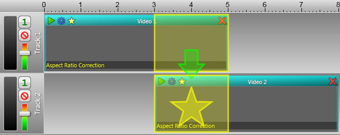

Transitions
Transition effects gradually change from one video or image to another or blends them in unusual ways.
The most common transition is a crossfade, which VideoMeld supports
directly through the Fade Graph. For other transitions, such as wipes,
dissolves, slides, etc., a transition effect needs to be added to the beginning or end of a video section. The steps below explain
how to a transition between two videos. Transition may be added on Image, Caption, and Overlay sections as well.
Step-by-step transition from Video 1 to Video 2:
- Use Track | Add Video to add Video 1 to Track 1.
- Use Track | Add Track to create a new track.
- Use Track | Add Video to add Video 2 to Track 2.
- Drag Video 2 to a position so that it starts about 2 seconds before the end of Video 1 (see below).
- Drag-and-drop a transition effect from the Effect Toolbar to the beginning of
Video 2.
Notes:
-
If Aspect Ratio Correction is required, the "Border" setting must
be set to "Black" to prevent the back layer from appearing in the borders.
-
The Fade Graph should be at maximum (no fades) for the duration of
the transition in both sections.
-
If either section is moved or trimmed later, the effect range must be adjusted or removed manually
using the Video Effects Editor. Both sections must be moved
together to maintain the aligned transition.

See Also
Getting Started
Crossfade Video